Find more at:
Credit: https://www.youtube.com/@BadmintonInsight
Rotation Speed
- Stretching out your chest at preparation phase 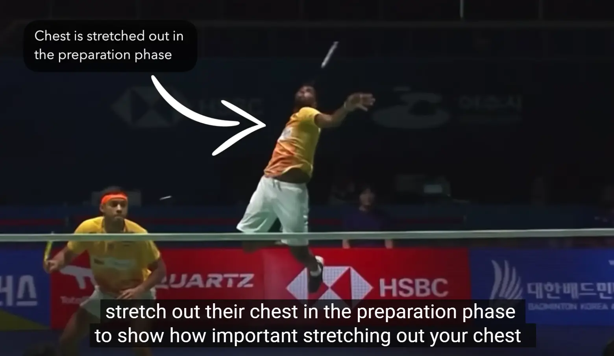 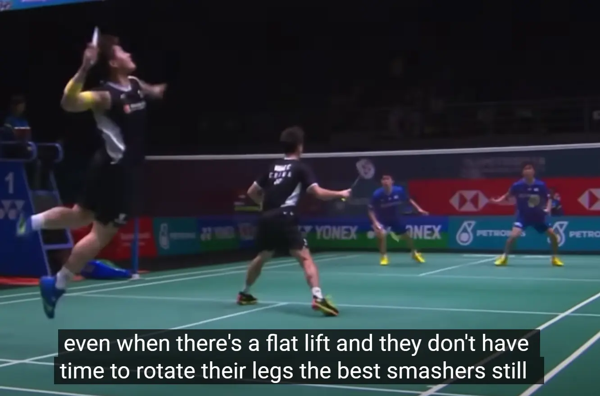
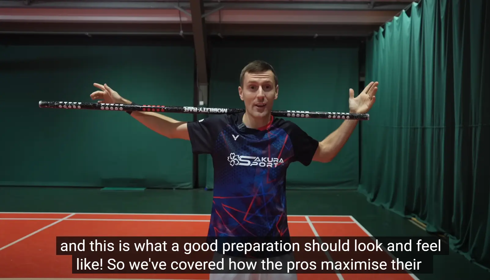
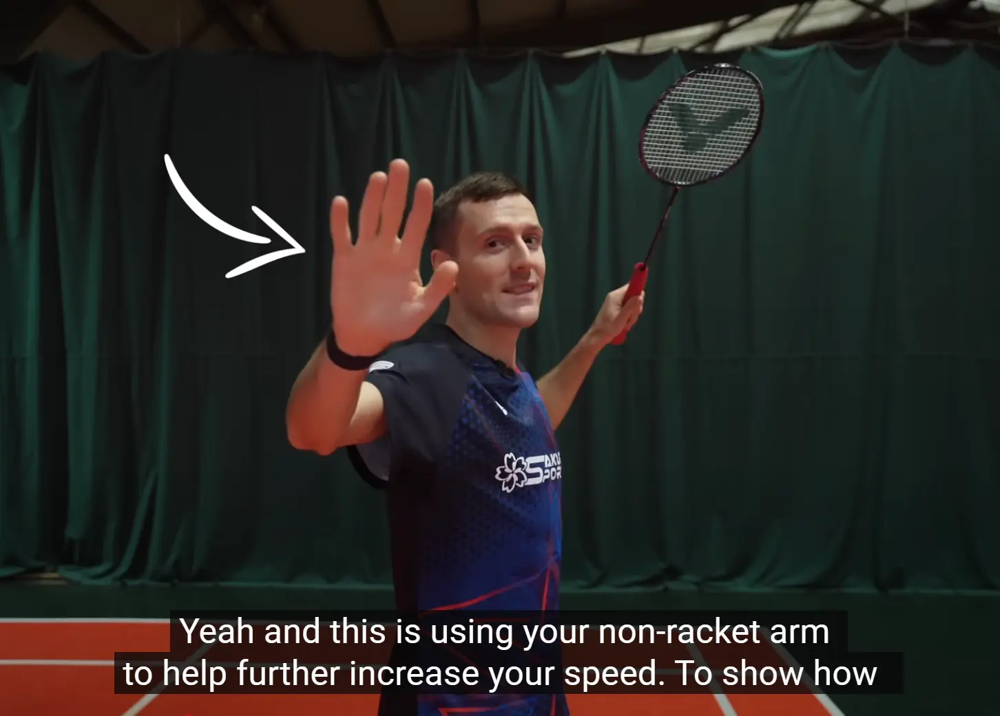
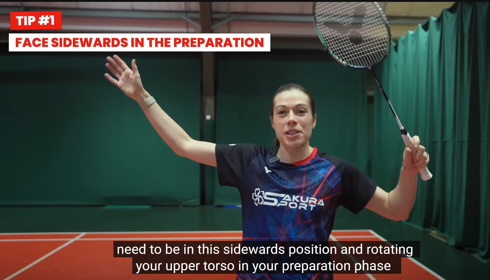
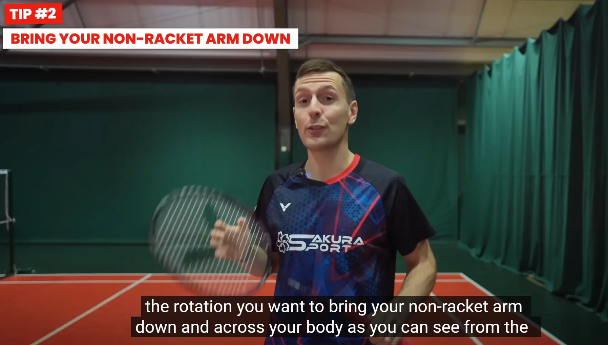
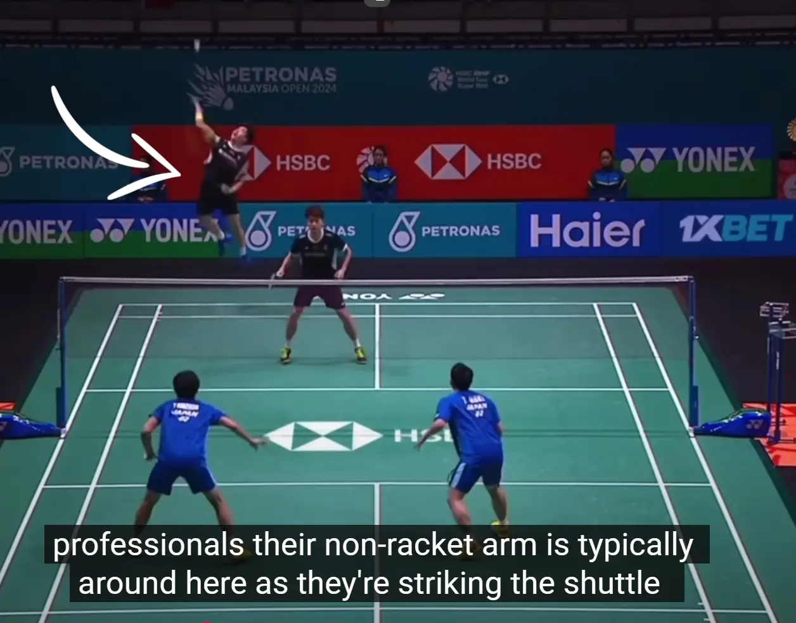
Perfect timing
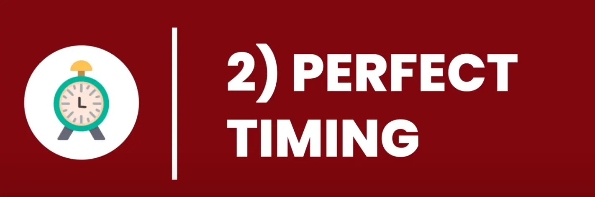
- 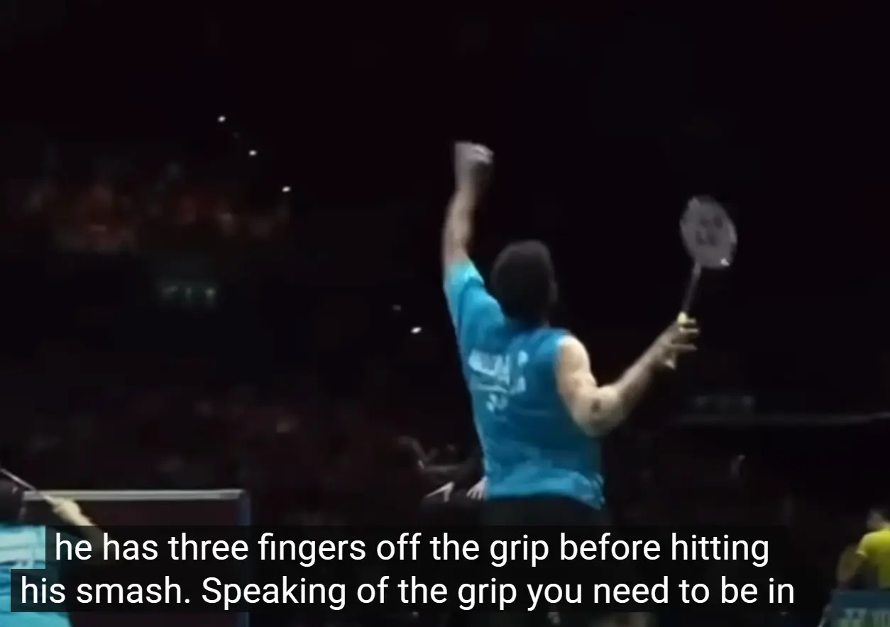
- 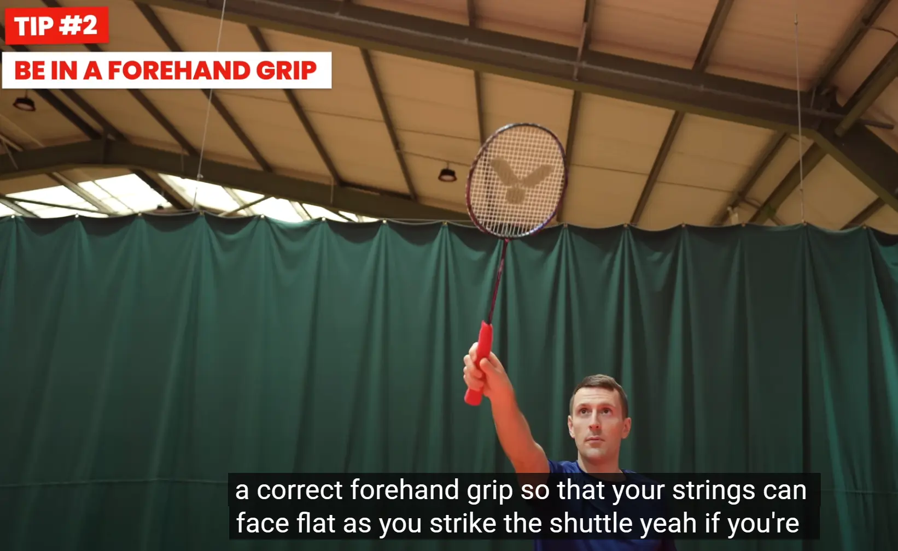
Perfect Placement
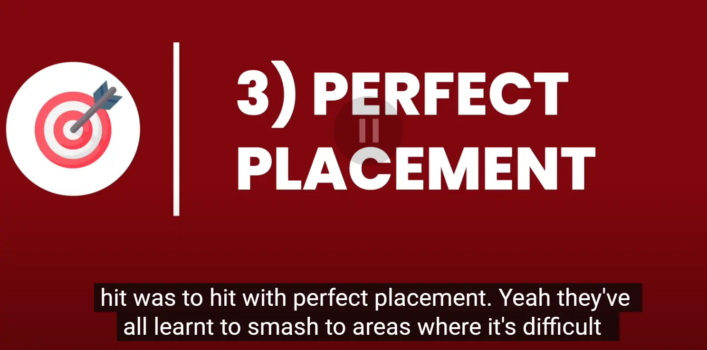 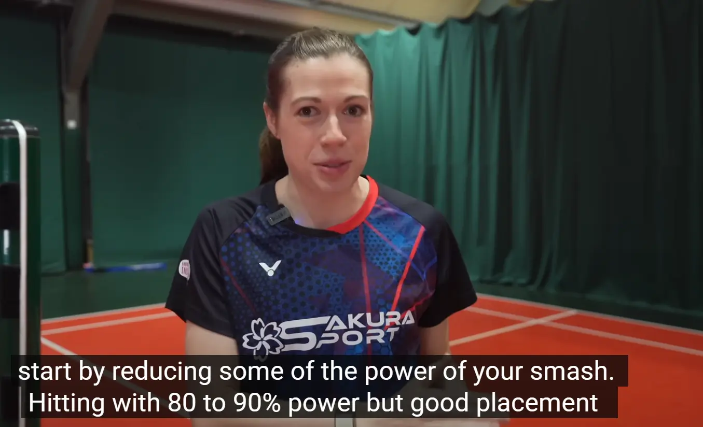
- 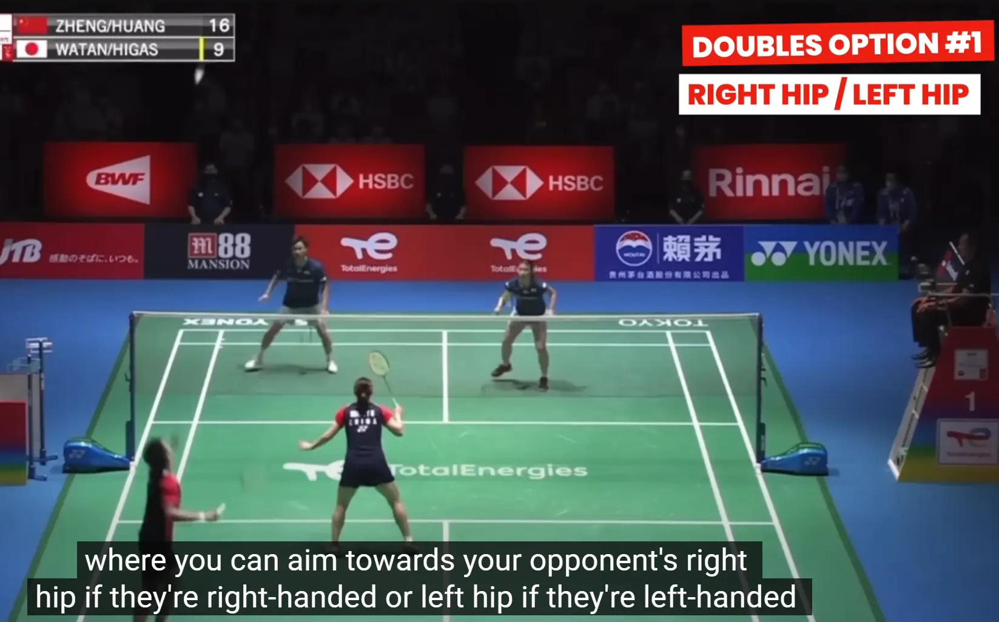
- 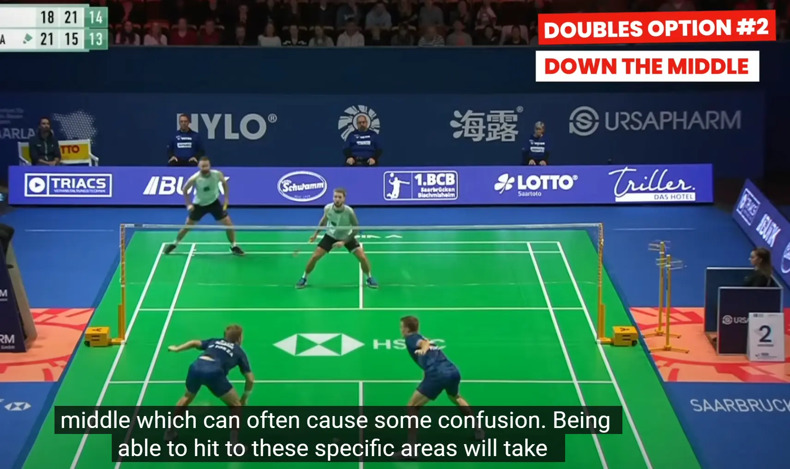 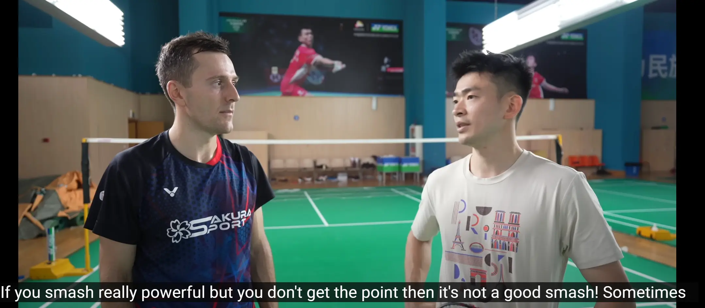
Mastering the Smash: Three Key Techniques from Pro Badminton Players
TLDR: This blog post explores three fundamental techniques used by professional badminton players to enhance their smash, focusing on maximizing rotation, speed, and placement. It also includes insights from Olympic champion Zheng Siwei on the importance of effective smashing.
If you observe the world’s top badminton smashers, you’ll notice that while their techniques may vary, they all share three fundamental practices that enable them to generate immense power in their smashes. This article will break down these techniques and provide actionable tips to help you improve your smash, regardless of your skill level. Stay tuned for insights from Olympic champion Zheng Siwei on what he considers the most crucial aspect of a smash.
1. Maximizing Rotation Amount
Importance of Rotation
One of the key elements that all professional smashers utilize is maximizing their rotation amount and speed. The more you can rotate your upper body, the greater the distance you have to accelerate your racket, which is essential for achieving a powerful smash.
Techniques to Enhance Rotation
To effectively stretch out your chest during the preparation phase, consider the following tips:
-
Tip 1: Sideward Positioning
Ensure you are facing sideways during your preparation. Even in situations where you have limited time to rotate your legs, the best smashers still manage to rotate their upper body effectively. -
Tip 2: Practice Chest Stretching
Use a stick to thread through your arms to practice the feeling of stretching out your chest. This exercise will help you understand the correct preparation position.
2. Increasing Rotation Speed
The Role of Kinetic Chain
The speed of your smash is significantly influenced by the rotational speed of your body. This speed is generated through the kinetic chain, which involves the coordinated movement of your legs, hips, and torso.
Utilizing the Non-Racket Arm
A crucial yet often overlooked aspect of increasing rotational speed is the effective use of the non-racket arm. Here are two tips to ensure you are using your non-racket arm correctly:
-
Tip 1: Maintain Sideward Position
Similar to maximizing rotation amount, ensure you are in a sideward position during your preparation phase to utilize your non-racket arm effectively. -
Tip 2: Arm Movement During Rotation
As you rotate, bring your non-racket arm down and across your body. This positioning is vital for generating maximum speed and ensuring proper timing when striking the shuttle.
3. Achieving Perfect Timing
Importance of Timing
Perfect timing is essential for executing an effective smash. Here are three tips to help you achieve this:
-
Tip 1: Relaxed Grip
Maintain a relaxed grip until the moment of contact with the shuttle. This relaxation allows for more power and a crisp sound upon impact. For instance, powerful smasher Praveen Jordan often has three fingers off the grip before hitting his smash. -
Tip 2: Correct Forehand Grip
Ensure you are using the correct forehand grip so that your racket strings face flat when striking the shuttle. A proper grip facilitates effective rotation and power. -
Tip 3: Dynamic Movement
Practice your smashing technique while moving, as your technique may differ when stationary.
Bonus Tip: Bodyweight Movement
Top smashers often move their body weight forward into the shuttle when executing powerful smashes. However, they can still achieve strong smashes while moving sideways or backward due to their effective rotation, speed, and timing.
4. Perfect Placement
While power is essential, placement can significantly increase the number of winners you hit. Professional players often smash to areas that are difficult for their opponents to defend. Here are some strategies for effective placement:
-
Singles Strategy
Aim for the sides of the court, as demonstrated by Olympic champion Viktor Axelsen, who successfully hit 85% of his smashes down the lines. -
Doubles Strategy
Target your opponent’s right or left hip, depending on their handedness, or aim down the middle to create confusion.
Practice for Placement
To improve your placement, consider reducing the power of your smash. Hitting with 80 to 90% power but focusing on placement can yield better results than hitting with full power directly to your opponent.
Conclusion: Insights from Zheng Siwei
As we conclude our exploration of effective smashing techniques, let’s reflect on the advice from Olympic champion Zheng Siwei. He emphasizes that a powerful smash is not effective if it does not lead to a point. Instead, he advocates for smashing with good placement, which can often be more beneficial than sheer power.
By implementing these techniques and focusing on placement, you can enhance your smashing ability and play more effectively on the court. For further improvement, consider exploring in-depth tutorials and training programs that focus on strength and speed.
Generated by Galaxy.ai YouTube Summarizer